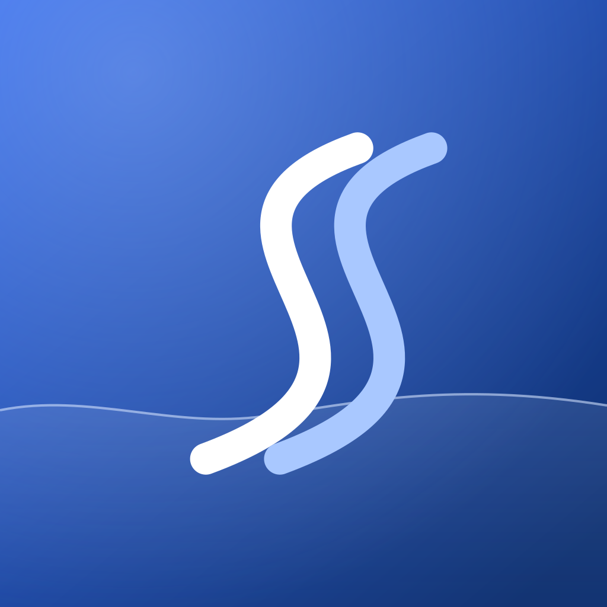
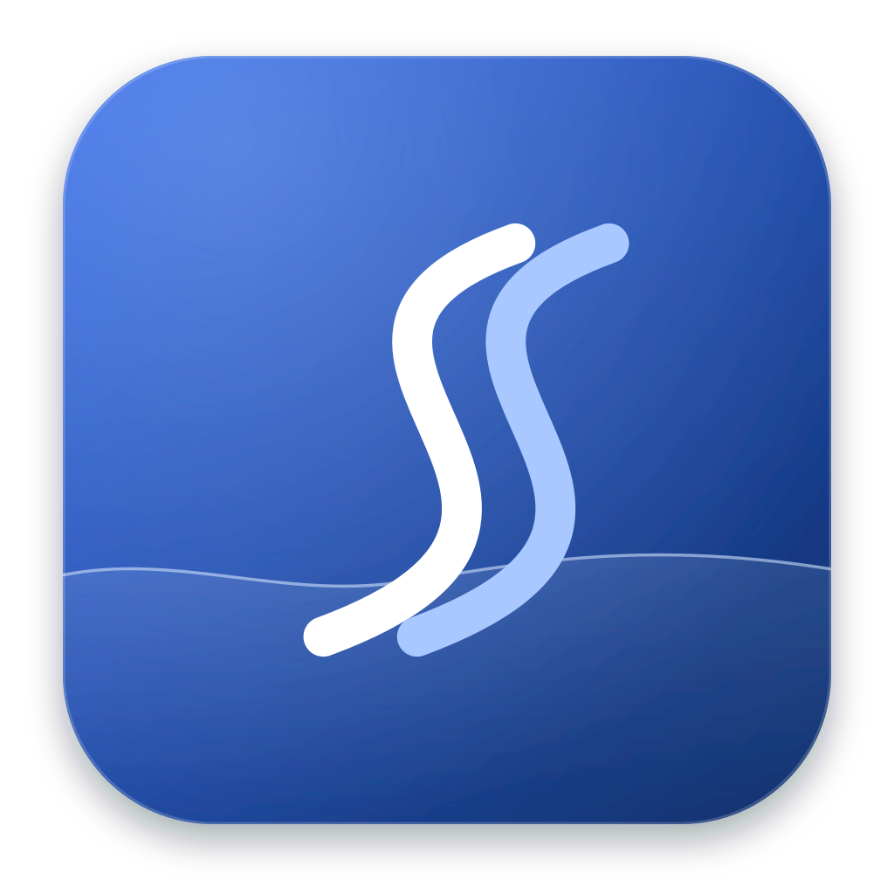
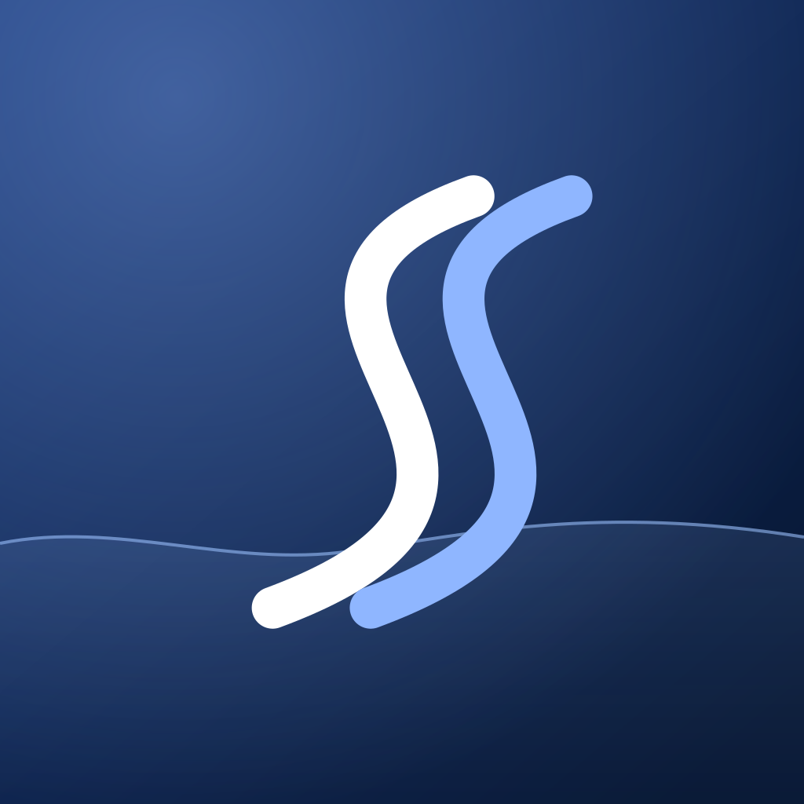

河流的形状，
成为界面的语言。
一套河流图标，双端共用。承载资料的容器留出可见水口，水面向右抬升；双笔画与双色强调构成统一轮廓，选中时水位和笔画一起变化。Mac 与 iPhone 使用完全相同的图形，只按界面调整尺寸。
一套图标，两个场景
同一份轮廓、颜色与状态规则。尺寸随界面调整，风格始终一致。
工作区 · Workspace
macOS1.75u 主体与 1.25u 细节。保留轻盈的双笔画，同时与 iPhone 共用双色水位与形态选中态。
- 尺寸 18 侧栏 · 20 工具栏 · 24 空态
- 状态 浅色 / 深色 / 选中 / 深色选中
随身记录 · Everyday
iOS与 Mac 使用相同资源。容器保留 18% 染色水位；选中时水位从 60% 抬升到 46%，笔画加重 0.2u。
- 尺寸 20 Tab · 24 工具栏 · 28 详情
- 状态 浅色 / 深色 / 选中 / 深色选中
四条规则
水口、水位、双笔、圆端。四个动作足以让 80 枚图标被认成同一家人。
容器在右下方向留出 3.8u 中心线开口，圆头收边；它是「河流离开容器」的地方，也是整套图形最容易被记住的缺口。
在有水位的容器里，水面永远向右抬升 0.8u。两端都用 18% 染色与 72% 不透明度的水位线；选中时水位同步抬升。
主体与细节永远差一档：1.75 / 1.25（双端共用）。细节是证据，不是第二套轮廓。
所有端点圆头、转角圆角，不用直角。图标没有尖锐的末端——像水，也像一个不会打断你的界面。
状态与尺寸
颜色不是唯一信号：选中态同时改变水位高度与笔画重量。
| Mac 显示尺寸 | 16 / 18 / 20 / 24 pt · 同一份 Original 资源 |
|---|---|
| iOS 显示尺寸 | 20 / 24 / 28 / 32 pt · 同一份 Original 资源 |
| 笔画 | 主体 1.75u · 细节 1.25u · 选中 +0.2u |
| 网格 | 24 × 24 · 共享几何 · 圆头与凸圆角 |
| 状态 | 浅色 · 深色 · 选中 · 深色选中 |
| 命名 | RiverGlyphToday · RiverGlyphTodaySelected |
完整图库
点击单枚下载当前状态的共享 SVG；尺寸切换仅用于观察不同界面的显示效果。


应用图标
同一道水位穿过品牌双流。iOS 满版，macOS 保留方舟形与投影。



接入
共享组件不默认切换 App 绑定；接入时先替换导航与工具栏；不要用图标替代文字标签，也不要把颜色当作唯一状态。
// 同一组件与资源目录加入双端 target RiverGlyphView(.memory, state: isSelected ? .selected : .normal, size: 18) // iOS Tab：选中态切换图片，水位自动抬升 RiverGlyphView(.river, state: selected ? .selected : .normal, size: 20) // 资源命名：RiverGlyphToday · RiverGlyphTodaySelected
旧 SF Symbols 与旧图集不一次性删除。先按「语义 ID → 新资源」映射替换导航、空态与卡片动作；截图验收通过后再清理旧图。
图标不承载唯一必要信息。水位是装饰性层次，不是数据；提醒、失败与同步状态仍然需要文字、位置和可重试动作。